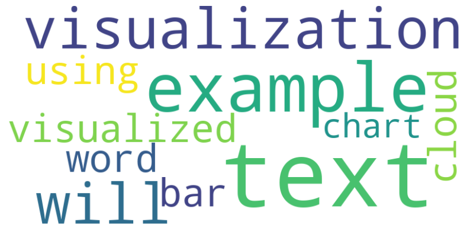
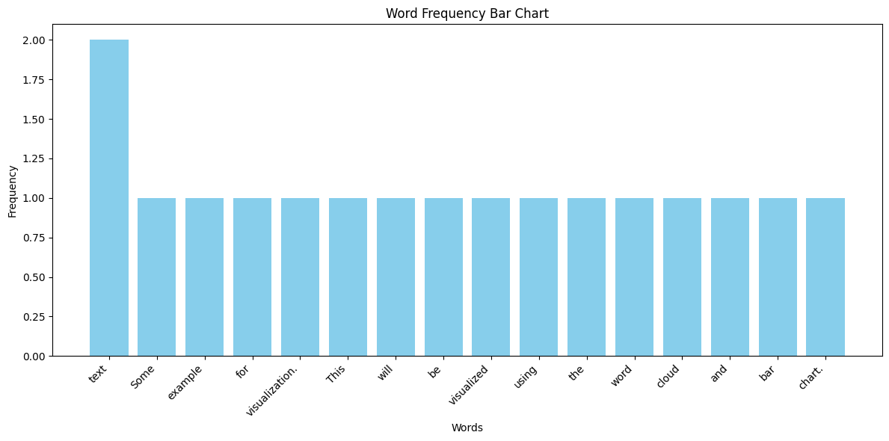

TextWiz Package#
from textwiz.preprocessing import TextProcessor
from textwiz.mining import TextAnalyzer
from textwiz.visuals import TextVisualizer
processor = TextProcessor(extra_stopwords=['some', 'extra', 'stopwords'])
text = "Some example text with punctuation! And some extra words."
processed_text = processor.remove_punctuation(text)
tokens = processor.tokenize(processed_text)
tokens_without_stopwords = processor.remove_stopwords(processed_text)
stemmed_text = processor.stemming(processed_text)
lemmatized_text = processor.lemmatization(processed_text)
print("Processed Text:", processed_text)
print("Tokens:", tokens)
print("Tokens without stopwords:", tokens_without_stopwords)
print("Stemmed Text:", stemmed_text)
print("Lemmatized Text:", lemmatized_text)
Processed Text: Some example text with punctuation And some extra words
Tokens: ['Some', 'example', 'text', 'with', 'punctuation', 'And', 'some', 'extra', 'words']
Tokens without stopwords: ['example', 'text', 'punctuation', 'words']
Stemmed Text: some exampl text with punctuat and some extra word
Lemmatized Text: Some example text with punctuation And some extra word
analyzer = TextAnalyzer()
# Example documents
documents = [
"This is the first document.",
"This document is the second document.",
"And this is the third one.",
"Is this the first document?",
]
# Bag of Words representation
bow_representation = analyzer.bag_of_words(documents)
print("Bag of Words Representation:")
for i, doc in enumerate(bow_representation):
print(f"Document {i+1}: {doc}")
# Generating N-grams
text = "This is an example sentence for generating N-grams."
ngrams = analyzer.generate_ngrams(text, n=3)
print("\nN-grams:")
print(ngrams)
# TF-IDF vectors
tfidf_vectors = analyzer.tf_idf(documents)
print("\nTF-IDF Vectors:")
for i, vector in enumerate(tfidf_vectors):
print(f"Document {i+1}: {vector}")
# Keyword extraction based on importance (TF-IDF scores)
text = "This is a sample text for keyword extraction based on importance."
keywords_imp = analyzer.keyword_extraction_imp(text, num_keywords=3)
print("\nKeywords based on importance:")
print(keywords_imp)
# Keyword extraction based on frequency
text = "This is a sample text for keyword extraction based on frequency of words."
keywords_freq = analyzer.keyword_extraction_freq(text, num_keywords=3)
print("\nKeywords based on frequency:")
print(keywords_freq)
# Calculating text similarity
doc1 = "This is a sample document."
doc2 = "This is another sample document."
similarity_score = analyzer.calculate_text_similarity(doc1, doc2)
print(f"\nSimilarity between documents '{doc1}' and '{doc2}': {similarity_score:.2f}")
Bag of Words Representation:
Document 1: ['This', 'document.', 'first', 'is', 'the']
Document 2: ['This', 'document', 'document.', 'is', 'second', 'the']
Document 3: ['And', 'is', 'one.', 'the', 'third', 'this']
Document 4: ['Is', 'document?', 'first', 'the', 'this']
N-grams:
['This is an', 'is an example', 'an example sentence', 'example sentence for', 'sentence for generating', 'for generating N-grams.']
TF-IDF Vectors:
Document 1: [0.05753641449035617, -0.044628710262841945, -0.044628710262841945, 0.05753641449035617, 0.05753641449035617]
Document 2: [0.04794701207529681, 0.0, -0.03719059188570162, -0.03719059188570162, 0.11552453009332421, 0.04794701207529681]
Document 3: [0.11552453009332421, 0.04794701207529681, -0.03719059188570162, -0.03719059188570162, 0.11552453009332421, 0.11552453009332421]
Document 4: [0.13862943611198905, 0.05753641449035617, -0.044628710262841945, 0.05753641449035617, 0.13862943611198905]
Keywords based on importance:
['This', 'is', 'a']
Keywords based on frequency:
['This', 'is', 'a']
Similarity between documents 'This is a sample document.' and 'This is another sample document.': 0.89
visualizer = TextVisualizer()
text = "Some example text for visualization. This text will be visualized using the word cloud and bar chart."
visualizer.word_cloud(text)
visualizer.bar_chart(text)

